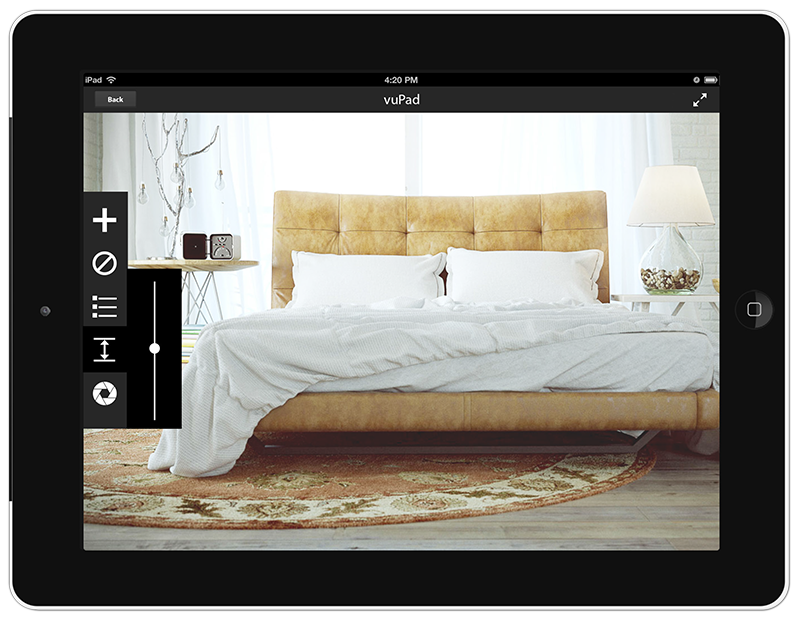
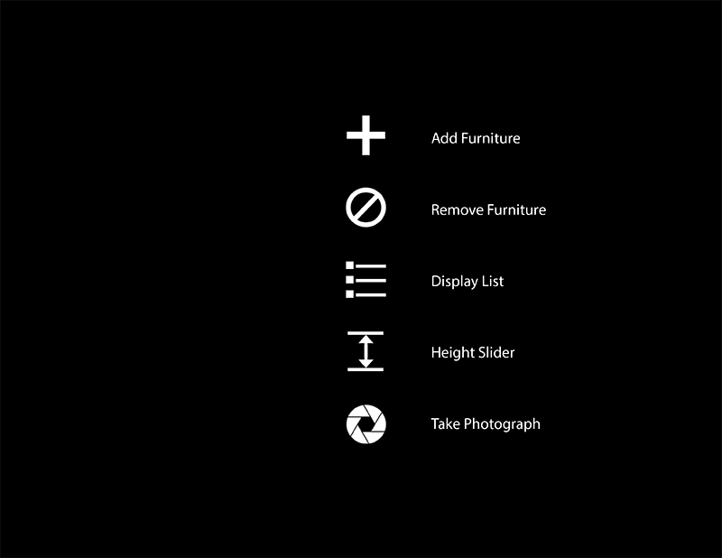

I joined a startup called vuPad, a furniture visualization company. The app we created allows users to visualize how furniture would look inside their rooms. The virtual furniture is to-scale so you can get a good idea of not only how something would look inside your room, but whether or not it would fit as well. More information at http://vupad.co.
The idea behind the advertisement is to have a male character in his new home using vuPad to look at different furniture arrangments. Eventually, a pair of female hands comes up and grabs the the male character's hands signifying some sort of relationship that has formed. The app is now being used by a female character showing slightly more feminine furniture pices. Finally, the male regains control of the iPad and looks at a crib, he is promptly replaced by the female who decides on a different type of crib.
Creating the video was a fairly challenging process. I shot a pair of hands holding an iPad in front of a greenscreen with makeshift trackers taped on. Then the iPad was 3d motion tracked. I then modeled, textured, and lit the room in Autodesk Maya and imported some of the furniture that would be available in the app. Finally, I mapped the motion tracked iPad to the 3d scene and composited everything together in Adobe After Effects.
In addition to creating an advertisement, I also worked on the 3d and UI/UX aspects of the project. I wrote a Python script that would batch convert furniture from our chosen sources into our proper format. That involved automating the merging of seperate meshes into one, centering it to the origin, automatically laying out the UV's and then bakingin the texture and lighting before finallye exporting it into the proper format.
Here is a video of an earlier build of the app
I am currently working on a new UI (The one in the video was not designed by me).
Here is a quick preview of an early proposed UI design that I am working on.
 